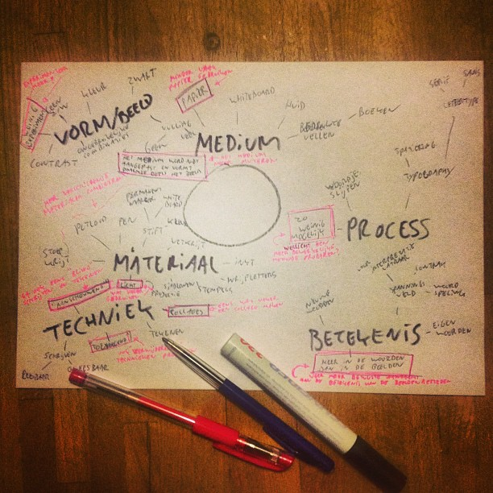

About
One day (July the 16 2013 to be precise), I had a discussion about adding some more challenge to the drawing I would occasionally make.
After brainstorming all the various ways I could interact with the media I use to draw with, I wrote down all the things I did least
For each of these things I made a small card. Now everytime I sat down to make a drawing I would randomly grab 3 cards from the stack.
When drawing I would try to adhere to those 3 challenges.
There were, however, two main drawbacks to these cards. The first was that I could not use the cards if I did not have them on my person. The second was that cards were beginning to show their usage, becoming smudgy.
So I decided to make a digital version.